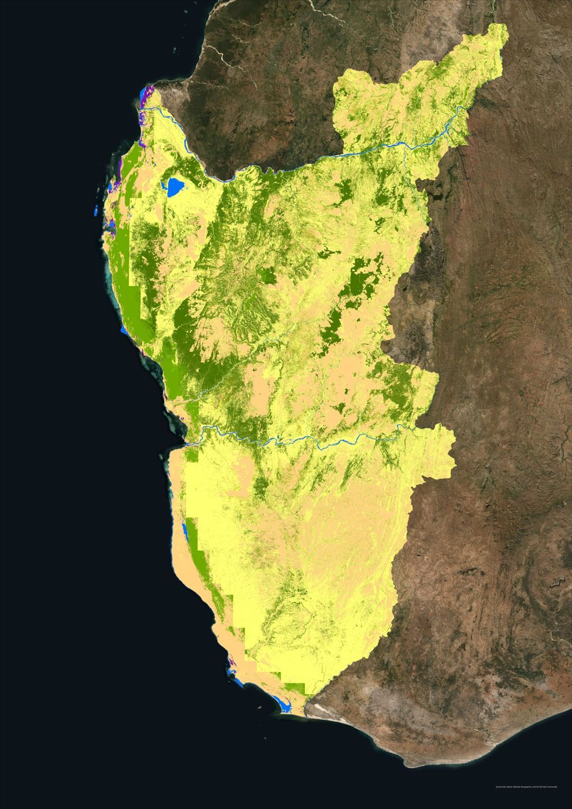
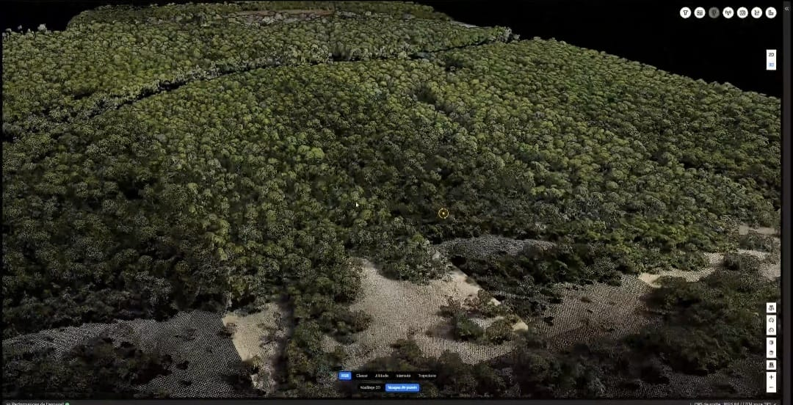
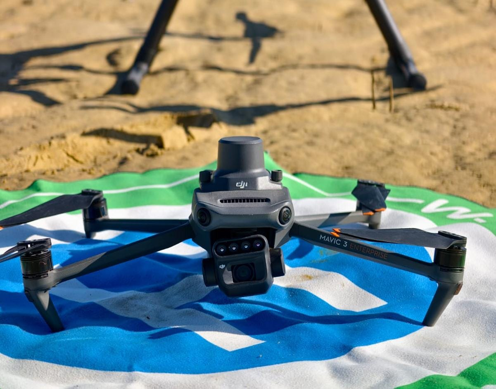

Bienvenue sur EcoScope Mada
Fondée par Tamby Herinandrianina, ingénieur agronome spécialisé en foresterie, SIG et télédétection, EcoScope Mada est une plateforme innovante dédiée à la surveillance écologique et à la gestion durable des ressources à Madagascar.
Explorez nos cartes interactives et découvrez comment nos données peuvent soutenir les projets environnementaux et les ONG.
Cartes des données sur Madagascar
Nos Services
Suivi de la déforestation par satellite
Nous assurons un suivi annuel ultra-précis de la déforestation grâce aux données Sentinel-2 et Landsat-9. Nos analyses détectent les moindres changements d'occupation du sol et fournissent des rapports clairs et exploitables (cartes + tableaux Excel) permettant aux ONG et décideurs de prendre des mesures immédiates pour protéger les forêts malgaches.
Estimation de la biomasse forestière
Grâce aux données LiDAR du satellite GEDI, nous calculons avec une précision inégalée la hauteur, la densité et la biomasse aérienne des forêts. Ces résultats, convertis en équivalent carbone, sont indispensables pour les projets REDD+, la compensation carbone et la valorisation des services écosystémiques.
Cartographie SIG (occupation du sol, NDVI)
Nous produisons des cartes d'occupation du sol et des indices de végétation (NDVI, NDRE) à partir des images Landsat et Sentinel. Ces cartes thématiques permettent d'analyser les dynamiques territoriales et d'accompagner les stratégies de conservation et d'aménagement durable du territoire.
Assistance technique en SIG et GEE
Nous formons vos équipes à l'utilisation avancée de Google Earth Engine et des outils SIG. Vous repartez avec des scripts personnalisés, des tutoriels pratiques et un support technique continu pour traiter vos propres données satellitaires en toute autonomie.
Collaboration avec ONG et chercheurs
Nous mettons notre expertise et nos données à votre service pour co-construire des projets d'impact. Cartes sur mesure, analyses spatiales, rapports scientifiques : un véritable partenariat technique pour amplifier vos actions de conservation à Madagascar.
Appui académique
Nous accompagnons étudiants et chercheurs en leur fournissant des données spatiales gratuites, des formations pratiques et un soutien technique pour leurs mémoires et thèses sur l'environnement et la gestion des ressources naturelles.
Imagerie Multispectrale par Drone
Avec notre drone DJI Mavic 3 Multispectral, nous réalisons des vols haute résolution (2 cm/pixel) et produisons des orthophotos, cartes NDVI/NDRE/NDWI et modèles 3D. Idéal pour le suivi précis de la santé végétale, la détection de stress hydrique et la planification de reforestation.
Levés LiDAR par Drone
Équipé du DJI Matrice 300 RTK + Zenmuse L2, nous effectuons des levés LiDAR de très haute précision. Nous générons des modèles numériques de terrain (MNT), modèles de surface (MNS) et nuages de points 3D même sous couvert forestier dense, parfaits pour le calcul de volumes, la détection de changements topographiques et les études d'impact environnemental.
Nos Réalisations
Un aperçu de projets menés à Madagascar, combinant télédétection, SIG et prises de vue par drone.

Dynamique de l'occupation du sol — Région Atsimo Andrefana
Analyse diachronique de l'occupation du sol sur 35 ans (1990–2025, pas de 5 ans) à partir d'images satellite multi-dates, afin de caractériser l'évolution du couvert végétal et les pressions sur les ressources naturelles de la région.

Levé LiDAR 3D — Mangrove de Kivalo
Cartographie tridimensionnelle par drone LiDAR de la mangrove de Kivalo : nuage de points haute densité permettant d'analyser la structure de la canopée, la hauteur des palétuviers et la topographie du site, même sous couvert dense.

Suivi multispectral — Restauration des mangroves, Menabe
Suivi par imagerie multispectrale (NDVI/NDRE) de l'état de santé et de la dynamique de restauration des mangroves dans la région Menabe, pour évaluer l'efficacité des actions de reboisement et détecter les zones de stress végétal.
Partenaires & Opportunités de Collaboration
EcoScope Mada est ouvert à tout partenariat stratégique : ONG, bailleurs de fonds, universités, institutions publiques et privées. Ensemble, accélérons la protection de l'environnement malgache.
Recherche & Universités
Accès privilégié aux données brutes • Co-publications • Stages et thèses
ONG & Associations
Cartes personnalisées • Rapports annuels • Suivi de projets terrain
Bailleurs & Institutions
Tableaux de bord • Indicateurs REDD+ • Suivi carbone • Rapports d'impact
Entreprises responsables
Compensation carbone • RSE • Zéro déforestation nette
Carte Explorateur
Découvrez une analyse détaillée de l'occupation du sol de Madagascar, les sommes des précipitations annuelles, et l'indice de végétation (NDVI) grâce à Google Earth Engine. Ces données sont essentielles pour surveiller la déforestation, évaluer la santé des écosystèmes, et planifier des interventions environnementales durables.
Données
Téléchargez les shapefiles des limites administratives de Madagascar :
- Limite Région
- Limite District
- Limite Commune
- Limite Fokontany
- Localité (village) - Prochainement disponible
- Hydrographie - Prochainement disponible
- Bassin Versant - Prochainement disponible
- Carreau Minier - Prochainement disponible
À Propos

Tamby Herinandrianina
Ingénieur Agronome spécialisé en Foresterie, SIG et Télédétection
Antananarivo, Madagascar